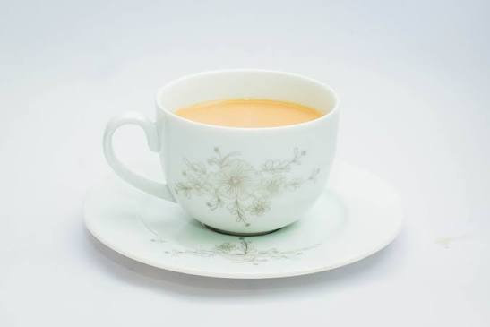

Milk Tea

Description
If you haven't have milk tea, you haven't lived! Ultra-customizable to your preferred taste, this is the livelihood of pretty much the entirety of Asia (though I can't say for anyone from the Middle East as I have never been there!) But I don't know anyone that doesn't like milk tea, so give it a try?
Ingredients
- Tea, both bagged or loose is fine.
- Milk
- Sugar
Steps
- Brew tea to preferred strength. With black tea, I'd give it 3 minutes max with boiled water.
- In a separate cup or bowl (that can be poured from), mix 1-2 parts sugar with 1 part boiled water to make a syrup.
- In serving cups, add 1 parts tea, milk, and syrup.
- Enjoy!